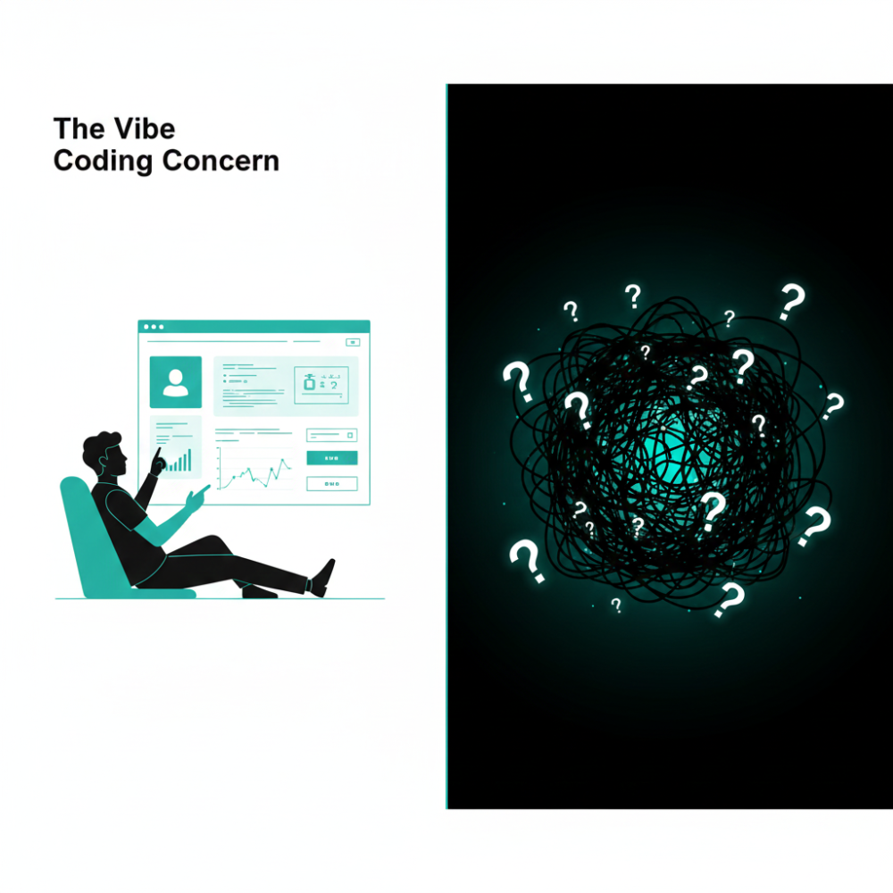

I've been reflecting on how far I've come with GenAI over the past two years. Not in a "look what I've accomplished" way - more like trying to make sense of the path and sharing my leap before you look approach to life.
When I mapped it out, I noticed something. It wasn't a steady climb. It was a series of ceilings - places where the tools I was using stopped being enough. But here's the thing: every time I hit a ceiling, the industry was evolving too. New tools emerged that solved the exact challenges I was facing. I wasn't just finding my way through, I was riding a wave that was building beneath me in real-time.
Like everyone else, I started with ChatGPT. Asking questions. Getting answers. Feeling like I'd discovered fire.
Then I got serious. I learned prompting - system prompts, chain-of-thought, few-shot examples. I dabbled in CustomGPTs, thinking I could package my expertise into reusable tools.
I hit the wall fast.
This was early 2024. My prompts could talk about my sales process. They couldn't do anything about it. CustomGPTs couldn't access my CRM. They couldn't trigger workflows. They couldn't connect to the systems where work actually happened. I had built smart conversation partners trapped inside chat windows.
(The landscape has shifted since then - CustomGPTs with MCP can now connect to external systems. But in early 2024, the ceiling was real.)
The Prompt Ceiling: It can talk, but it can't do.
From March 2024 through most of 2025, I lived here.
I went looking for tools that could actually do things. AnyQuest, Clay, n8n, AgentAI. Low-code/no-code agent builders that could connect to my real systems.
Now we were cooking. I built automations that enriched leads, triggered Slack notifications, updated CRMs. Problems that would have required a developer six months earlier, I could tackle myself.
I never went deeper into frameworks like LangChain or CrewAI - the low-code tools handled everything I needed. But I know plenty of developers who skipped the no-code phase entirely and went straight from CustomGPTs to building with frameworks. Different paths, same destination.
Now I have hit another wall.
I am automating workflows. But they are disjointed. Outputs lived in documents, the human needs to orchestrate across agent runs, especially for long running processes. I need a UI layer to connect my automations into a cohesive application. I need a database to store the outputs of my agents - a system of record, not just a collection of artifacts.
Low-code automation tools are great at connecting systems. They're not great at being a system.
The Automation Ceiling: It runs, but it doesn't live where work happens.
The problem: automations need a home. They need to be embedded into places where work can actually happen. I needed to give people a UI to do the work.
So this fall, I started building.
I skipped the AI copilot phase entirely. Tools like Cursor and GitHub Copilot are designed for developers who already have codebases - AI sits alongside them, suggesting code, autocompleting functions, helping debug. It's powerful if you're already a programmer. But I wasn't. I didn't have existing code to augment.
I needed to create from scratch. Instead, I jumped straight to vibe coding. Replit, Claude Code, Railway. Tools that let me describe what I wanted and generate entire applications from scratch.
That's where I am now. Vibe coder. And I'm starting to see the next ceiling.
Vibe coding is: prompt, AI builds, test, use the test results to refine, repeat. It works. You ship things. But you're essentially building and debugging through conversation.
You're testing the experience, not the code
And I'll be honest - it's starting to make me nervous.
I'm building small applications that work. I know they work because I can test them. When I find bugs, I go back to the AI and it fixes them. But I have no idea what the underlying code actually does. It's a black box that happens to produce the right outputs.
For small apps, this is fine. But what happens as these applications get more complex? Am I digging myself into a hole I can't see? Are there blind spots - security issues, architectural debt, performance problems - that I won't discover until it's too late? Will this approach scale, or will I hit a wall where the AI can't untangle the mess we've created together?

I don't have answers yet. But I can see where the answers might live. The newest term I've heard is "Vibe Engineering".
Simon Willison wrote about this recently - it's using AI as a tool within a structured, disciplined engineering process - version control, testing frameworks, architecture patterns, maintainable code. Tools like Claude Code and Codex enable this, but the discipline comes from the engineer, not the tool.
The difference isn't what you build. It's whether you can maintain it. Whether someone else can pick it up. Whether it survives contact with the next feature request.
I'm not a vibe engineer yet. But I can see the ceiling I'm about to hit.
Here's what I've noticed: two years ago, the "agent builder" category didn't exist. A year ago, "vibe coder" wasn't a thing. Six months ago, nobody was talking about "vibe engineering".
Every phase I've described emerged in real-time. I didn't follow a roadmap - I just kept hitting ceilings and looking for the next unlock.
I'm staring at the vibe engineering ceiling right now. I don't know what's beyond it.
Maybe it's about orchestrating multiple AI systems working together. Maybe it's about defining what to build rather than how to build it. Maybe the ceiling becomes taste and judgment - when anyone can build anything, knowing what's worth building is the bottleneck.
Or maybe it's something that doesn't exist yet. Something we'll name six months from now.
I'll let you know when I get there.
I'm at vibe coder, staring at the next ceiling. Where are you?